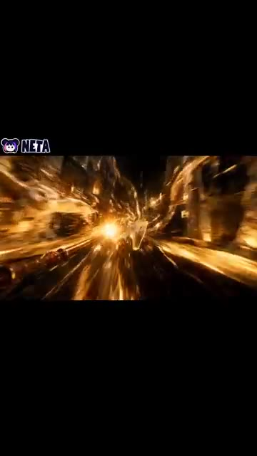
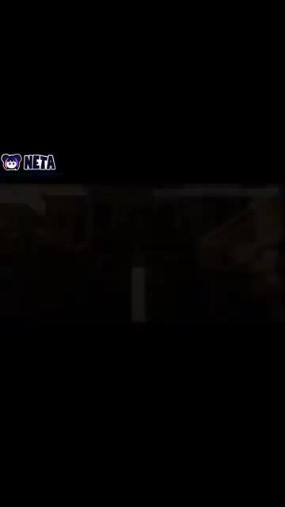
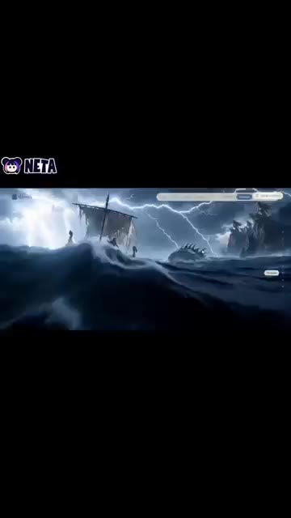
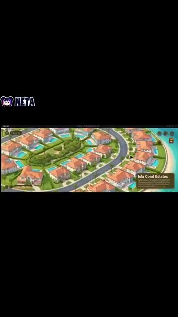
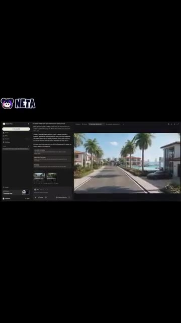
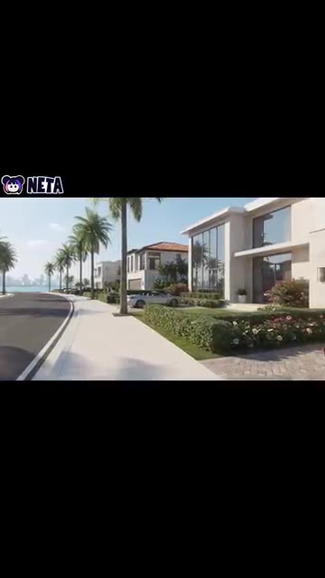
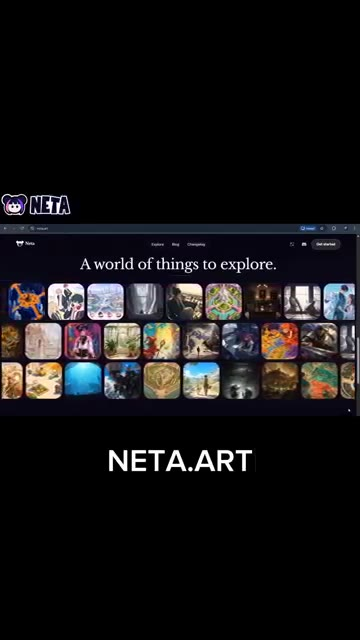

La vidéo de *Pursuing AI* met en lumière une avancée majeure dans la génération de contenu visuel par intelligence artificielle : la transition d'une simple génération d'images ou de clips isolés vers la création de mondes immersifs interconnectés. L'outil central présenté, Netta Studio, permet aux créateurs de s'affranchir du simple plan fixe pour concevoir des univers fictionnels complets, dotés de leurs propres environnements, personnages et cartes géographiques interactives. Cette approche révolutionne le prototypage visuel et la construction d'univers (*worldbuilding*) en permettant de lier visuellement des scènes disparates au sein d'un même écosystème cohérent.
Sur le plan méthodologique, le processus créatif exposé suit un tunnel de production linéaire mais hautement automatisé : l'incubation d'une vision textuelle initiale, la génération d'environnements fantastiques texturés, l'agencement spatial via une carte du monde globale, et enfin l'incarnation visuelle. Grâce à des mouvements de caméra en vue à la première personne (POV), l'IA simule la déambulation de l'utilisateur à l'intérieur même de sa création. Cette technique transforme un concept abstrait en une expérience sensorielle navigable et partageable, ouvrant des perspectives inédites pour les réalisateurs, les concepteurs de jeux vidéo et les créateurs de contenu en quête d'immersion totale.
Pour les créateurs de vidéo, ce workflow représente un gain de temps et de ressources considérable dans les phases de pré-production et de recherche visuelle. En éliminant le besoin de modélisation 3D complexe ou de moteurs de jeu lourds, ces outils démocratisent la réalisation de décors oniriques et de plans subjectifs complexes. C'est l'émergence d'une nouvelle ère où la narration visuelle ne se contente plus de raconter une histoire, mais invite le spectateur (ou le créateur) à explorer physiquement l'espace mental dont elle est issue.
Il y a enfin une IA qui vous permet de donner vie à vos mondes imaginaires et d'y pénétrer pour de vrai. Elle s'appelle Netta Studio, et voici comment elle fonctionne. Vous commencez avec une idée, et Netta Studio la transforme en un monde rempli de lieux, de personnages et d'environnements uniques. Imaginez des forêts lumineuses, des royaumes mystérieux et des paysages gigantesques tout droit sortis d'un film fantastique.
Interface & Outils : Démonstration de l'outil Netta Studio avec logo en haut à gauche affichant "NETTA".
Contenu textuel & Code : Visuels de mondes imaginaires générés par intelligence artificielle avec le logo de la marque "NETTA".
Action / Démonstration : Présentation dynamique de séquences vidéo générées par l'IA illustrant les mondes fantastiques créés.

🔍 Agrandir
🔍 AgrandirMais cela ne s'arrête pas à la génération de scènes individuelles. Avec une fonctionnalité de carte du monde, vous pouvez rassembler vos lieux et voir comment tout votre monde se connecte. Et vient ensuite la partie la plus cool, vous pouvez générer des vidéos en vue à la première personne (POV) et faire l'expérience de votre monde comme si vous y marchiez réellement. Votre imagination passe d'une simple idée à un monde que vous pouvez voir, explorer et partager.
Interface & Outils : Application de génération vidéo par IA dotée d'une fonction de carte du monde et d'un mode de visualisation en première personne (POV).
Contenu textuel & Code : Texte affiché dans l'interface détaillant la génération de scènes interconnectées et le rendu d'un quartier résidentiel de luxe avec des maisons dotées de piscines et de palmiers ('Isla Coral Estates').
Action / Démonstration : Navigation à travers une carte interactive montrant des emplacements connectés, puis transition vers une vue subjective (POV) simulant une promenade virtuelle dans le monde généré par IA.

🔍 Agrandir
🔍 Agrandir
🔍 Agrandir
🔍 AgrandirVous voulez créer le vôtre ? Allez voir Netta Studio sur netta.art.
Interface & Outils : Navigateur web affichant le site Netta Studio (netta.art) avec le logo NETA en haut à gauche et un bandeau de navigation supérieur.
Contenu textuel & Code : Texte principal : « A world of things to explore. ». Grille de vignettes illustrant diverses créations artistiques et visuelles générées par intelligence artificielle. Texte ajouté en surimpression en bas : « NETA.ART ».
Action / Démonstration : Présentation de la plateforme web Netta Studio et de sa galerie d'œuvres artistiques créées par IA.

🔍 Agrandir